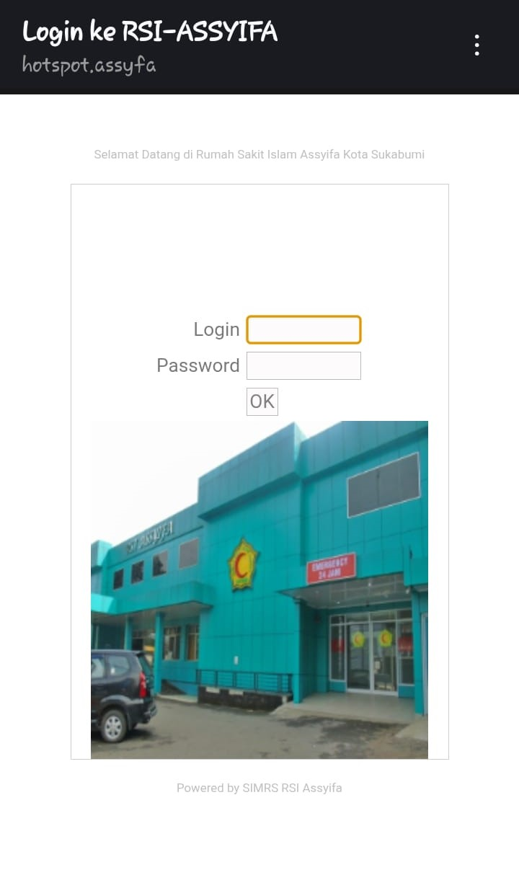
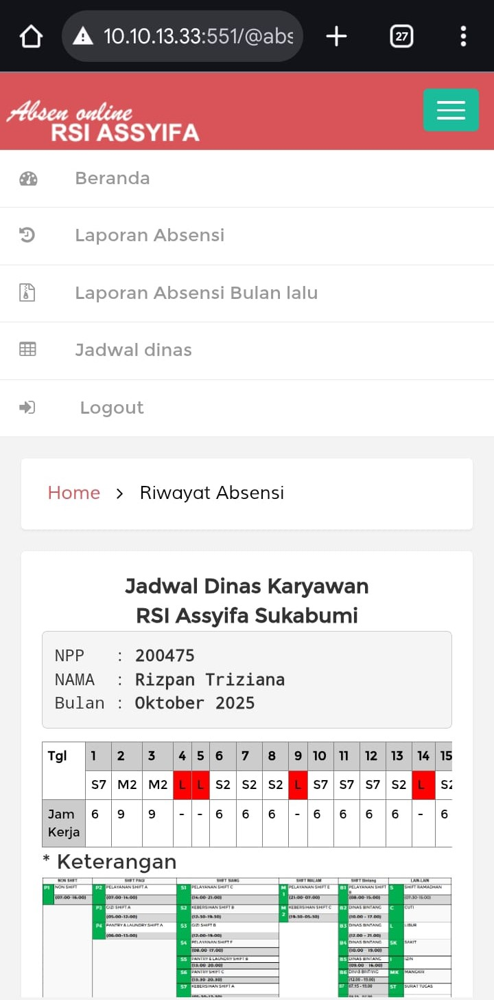
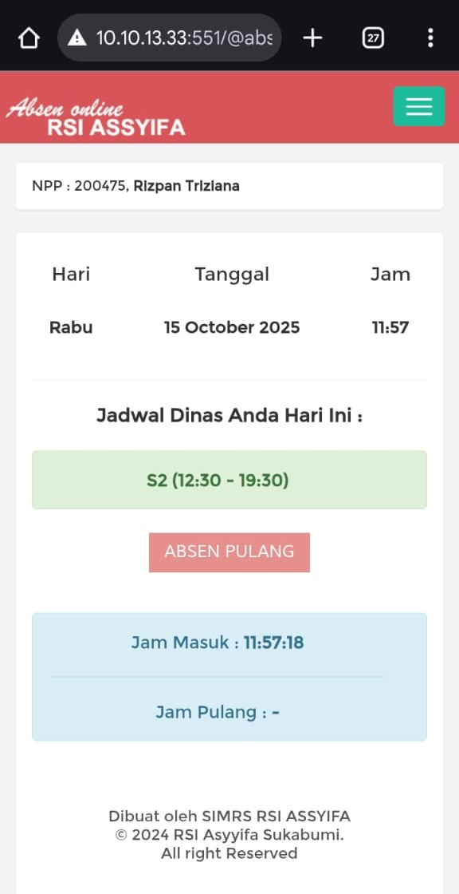
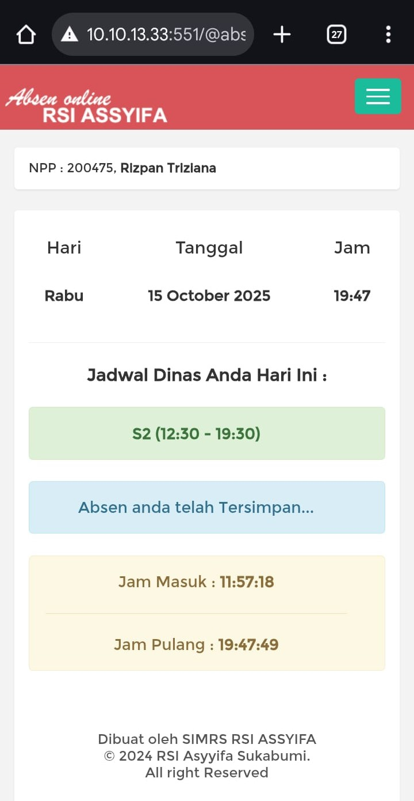
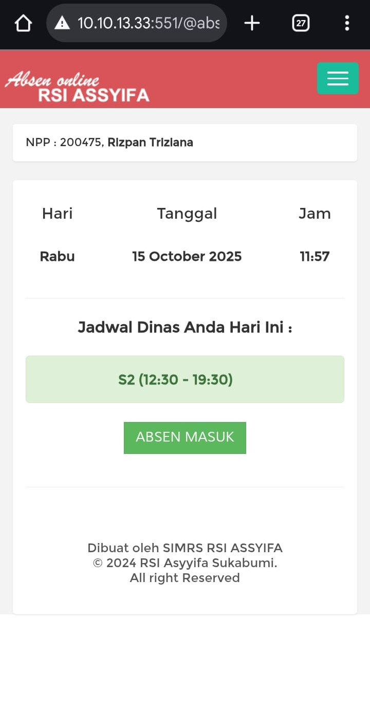
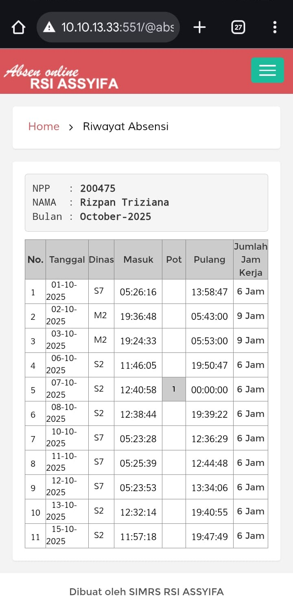
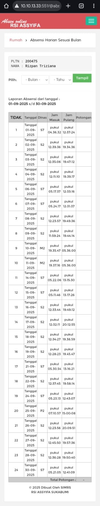

Analisis Penerapan Sistem Absensi Pegawai Berbasis Website RS Assyifa Kota Sukabumi
Latar Belakang
RS Assyifa Kota Sukabumi telah menggunakan sistem absensi berbasis website untuk mengelola kehadiran pegawai. Namun, diperlukan analisis untuk mengevaluasi efektivitas sistem dalam mendukung proses pencatatan, pengolahan data, serta pelaporan absensi secara akurat dan efisien.
Tujuan Analisis
- Mengevaluasi kinerja sistem absensi yang berjalan
- Mengidentifikasi kelemahan dan kendala sistem
- Memberikan rekomendasi perbaikan sistem
- Meningkatkan efisiensi pengelolaan data kehadiran pegawai
Metodologi
Analisis dilakukan menggunakan metode:
- Observasi terhadap proses absensi pegawai
- Wawancara dengan bagian administrasi dan kepegawaian
- Analisis PIECES (Performance, Information, Economy, Control, Efficiency, Service)
- Pemodelan sistem menggunakan diagram UML
Analisis Sistem (Ringkasan)
Berdasarkan analisis PIECES diperoleh hasil sebagai berikut:
- Performance: Sistem mempercepat pencatatan kehadiran dibandingkan manual.
- Information: Data tersimpan terpusat dan lebih mudah diakses.
- Efficiency: Mengurangi penggunaan kertas dan duplikasi data.
- Control: Sistem memiliki kontrol akses berbasis login.
- Service: Mempermudah pembuatan laporan bulanan.
Tanggung Jawab Saya
- Menganalisis alur proses absensi pegawai
- Mengidentifikasi kebutuhan sistem
- Membuat dokumentasi analisis sistem
- Menyusun laporan PKL secara lengkap
- Menyusun rekomendasi pengembangan sistem
Hasil & Rekomendasi
Hasil analisis menunjukkan bahwa sistem absensi berbasis website mampu meningkatkan efisiensi dan akurasi pencatatan kehadiran pegawai. Namun, direkomendasikan pengembangan fitur seperti:
- Integrasi notifikasi kehadiran
- Peningkatan keamanan autentikasi
- Backup data otomatis
- Dashboard monitoring real-time untuk manajemen
Dampak Proyek
Proyek ini membantu pihak rumah sakit dalam memahami efektivitas sistem absensi yang digunakan serta memberikan rekomendasi strategis untuk pengembangan sistem ke depan.
Screenshot Sistem






